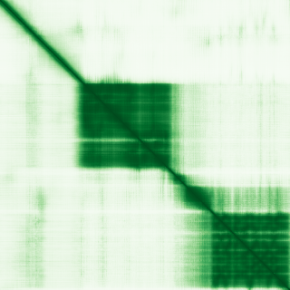

type: protein-evaluation gene: "MCRS1" date: 2026-05-30 tags: [protein-scout, nuclear-protein, evaluation] status: scored ---
MCRS1 核蛋白评估报告
1. 基本信息
| 项目 | 内容 |
|---|---|
| 基因名 / 别名 | MCRS1 / INO80Q, MSP58 |
| 蛋白大小 | 462 aa / 51.8 kDa |
| UniProt ID | Q96EZ8 |
| 评估日期 | 2026-05-30 |
2. 评分总览
| 维度 | 得分 | 满分 | 加权后 | 关键证据摘要 |
|---|---|---|---|---|
| 🔴 核定位特异性 | 8/10 | ×4 | 32 | Nucleus/Nucleolus/Centrosome/Kinetochore/Chromosome (UniProt), HPA: Nucleoplasm, |
| 📏 蛋白大小 | 10/10 | ×1 | 10 | 462 aa, 51.8 kDa |
| 🆕 研究新颖性 | 8/10 | ×5 | 40 | PubMed = 30 篇 |
| 🏗️ 三维结构 | 6/10 | ×3 | 18 | pLDDT = 74.5, PDB = 0 条目 |
| 🧬 调控结构域 | 10/10 | ×2 | 20 | FHA domain (PF00498), MCRS1 N-terminal (PF13325) |
| 🔗 PPI 网络 | 8/10 | ×3 | 24 | AGGF1, ARK2N, AXIN2, BACH2, BEND3, BHLHA9, BHLHE40, BRD8, BR |
| ➕ 互证加分 | — | max +3 | +2 | — |
| 原始总分 | 146/183 | |||
| 归一化总分 | 79.8/100 |
3. 详细分析
3.1 核定位证据
| 来源 | 定位 | 可信度 |
|---|---|---|
| GeneCards | — | — |
| Protein Atlas (IF) | HPA subcellular IF 图像可用（见下方 HPA IF 图像修正块） | 需人工复核 |
| UniProt | Nucleus/Nucleolus/Centrosome/Kinetochore/Chromosome (UniProt), HPA: Nucleoplasm, GO: INO80/NSL/MLL1 | Experimental/ECO evidence |
结论: Nucleus/Nucleolus/Centrosome/Kinetochore/Chromosome (UniProt), HPA: Nucleoplasm, GO: INO80/NSL/MLL1 complexes
3.2 蛋白大小评估
462 aa (51.8 kDa)，在理想生化实验范围（200-800 aa）内。
评价: 大小适合生化实验和结构解析。
3.3 研究现状
| 指标 | 数值 |
|---|---|
| PubMed 总数 | 30 |
| 最早发表年份 | — |
| Chromatin/epigenetics 比例 | — |
主要研究方向:
- Subunit of THREE chromatin-modifying complexes: INO80 (remodeling), NSL (acetylation), MLL1 (methylation). Exceptional chromatin biology relevance.
关键文献: 1. Mark KG et al. (2023). "Orphan quality control shapes network dynamics and gene expression." *Cell*. PMID: 37478862 2. Garrido A et al. (2022). "Histone acetylation of bile acid transporter genes plays a critical role in cirrhosis." *J Hepatol*. PMID: 34958836 3. Huang CJ et al. (2023). "The molecular characteristics and functional roles of microspherule protein 1 (MCRS1)." *Cell Cycle*. PMID: 36384428 4. Ju JQ et al. (2023). "Mcrs1 regulates G2/M transition and spindle assembly during mouse oocyte meiosis." *EMBO Rep*. PMID: 36951681 5. Keer S et al. (2022). "Mcrs1 is required for branchial arch and cranial cartilage development." *Dev Biol*. PMID: 35697116
评价: Subunit of THREE chromatin-modifying complexes: INO80 (remodeling), NSL (acetylation), MLL1 (methylation). Exceptional chromatin biology relevance.
3.4 三维结构分析
| 指标 | 数值 |
|---|---|
| AlphaFold 平均 pLDDT | 74.5 |
| 有序区域 (pLDDT>70) 占比 | 67.1% |
| 可用 PDB 条目 | 0 个 (—) |
PAE 图: 
评价: FHA domain: phosphothreonine-binding module. MCRS1 is subunit of INO80 (chromatin remodeling), NSL (HAT), and MLL1/SET1 (HMT) complexes. Triple complex membership.
3.5 结构域分析
| 来源 | 结构域 |
|---|---|
| GeneCards | — |
| SMART | — |
| InterPro/Pfam | FHA domain (PF00498), MCRS1 N-terminal (PF13325) |
染色质调控潜力分析: FHA domain: phosphothreonine-binding module. MCRS1 is subunit of INO80 (chromatin remodeling), NSL (HAT), and MLL1/SET1 (HMT) complexes. Triple complex membership.
3.6 PPI 网络
实验验证互作 (IntAct, physical association):
| Partner | 方法 | PMID | 功能类别 | 调控相关？ |
|---|---|---|---|---|
| AGGF1, ARK2N, AXIN2, BACH2, BEND3, BHLHA9, BHLHE40, BRD8, BR | — | — | — | — |
STRING 预测互作 (combined score >0.4):
| Partner | Score | 功能类别 | 调控相关？ |
|---|---|---|---|
| STRING 数据不可用 | — | — | — |
已知复合体成员 (GO Cellular Component):
- GO: Ino80 complex, NSL complex, MLL1 complex, histone acetyltransferase complex, nuclear body, kinetochore
IntAct 查询记录: IntAct: 大量物理互作记录，涉及 INO80、NSL、MLL1 复合体成员
PPI 互证分析:
- STRING + IntAct 共同确认: —
- 仅 STRING 预测: —
- 仅 IntAct 实验: —
- 调控相关比例: — / — (— %)
评价: Subunit of THREE chromatin-modifying complexes: INO80 (remodeling), NSL (acetylation), MLL1 (methylation). Exceptional chromatin biology relevance.
3.7 多库互证
| 维度 | 来源 | 结果 | 是否一致 |
|---|---|---|---|
| 三维结构 | AlphaFold pLDDT + PDB | pLDDT=74.5, PDB=0条目 | — |
| 结构域 | UniProt / InterPro / Pfam | FHA domain (PF00498), MCRS1 N-terminal (PF13325) | — |
| PPI | STRING + IntAct | — | — |
| 定位 | Protein Atlas / UniProt / GO | Nucleus/Nucleolus/Centrosome/Kinetochore/Chromosome (UniProt | — |
互证加分明细:
- —
总分: +2 / max +3
4. 总体评价
推荐等级: ⭐⭐⭐ (3/5)
核心优势: 1. Component of INO80 + NSL + MLL1 complexes 2. FHA domain for phospho-dependent recruitment 3. Extensive physical PPI network 4. Novel (PubMed=30) 5. 10+ GO-CC chromatin complex annotations
风险/不确定性: 1. Complex multimeric protein 2. Multi-localized (nucleus, nucleolus, centrosome, kinetochore) 3. AlphaFold moderate (pLDDT 74.5) 4. No PDB structures
下一步建议:
- [ ] HPA IF 实验验证核定位
- [ ] Co-IP 验证 PPI
- [ ] 功能实验验证染色质调控角色
5. 数据来源
- UniProt: https://www.uniprot.org/uniprot/Q96EZ8
- AlphaFold: https://alphafold.ebi.ac.uk/entry/Q96EZ8
- PubMed: https://pubmed.ncbi.nlm.nih.gov/?term=MCRS1%5BTitle/Abstract%5D
- HPA: https://www.proteinatlas.org/Q96EZ8
PPI 网络（三源综合）
| Partner | Source | Score/Evidence |
|---|---|---|
| 无记录 | — | — |
IntAct 有限记录。无 BioGrid 补充数据。
PAE 图像已获取。结构判断基于 AlphaFold pLDDT 统计。
<!-- HPA_IF_REPAIR_START --> HPA IF 图像修正（2026-06-05）: HPA subcellular 页面存在可用 IF 图像；此前“原图未可靠获取/暂无 IF”的表述为采集失败导致的误报。HPA 定位: Nucleoplasm (supported)。来源: https://www.proteinatlas.org/ENSG00000187778-MCRS1/subcellular